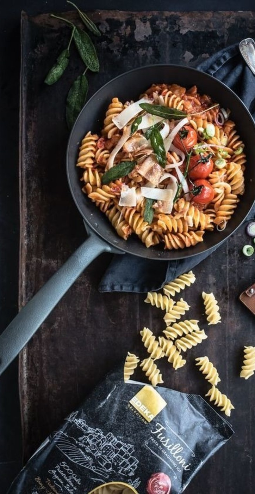
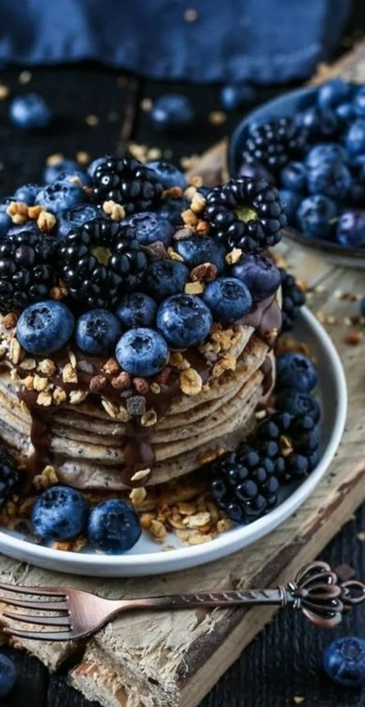
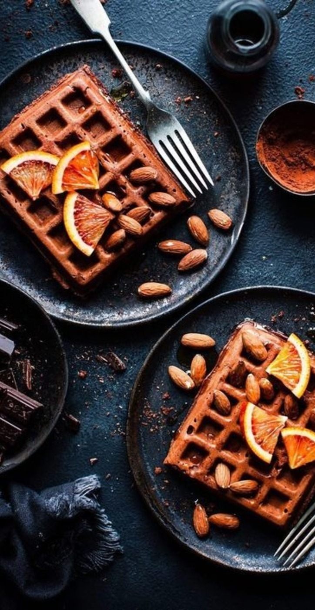

U nas znajdziesz przepis na każdą okazję do wykonania dla każdego!
Poniżej znajduje się kilka świetnych propozycji.
Makaron ze szpinakiem
SKŁADNIKI
CZAS
PORCJE
• 150 g szpinaku
• pół cebuli
• 2 ząbki czosnku
• 150 g makaronu
• bazylia
• 1/2 łyżki masła
• 1 łyżka oliwy
• 1/3 szklanki śmietanki 30%
• 1/3 szklanki tartego parmezanu
30 min
2
SPOSÓB PRZYGOTOWANIA
Makaron ugotować al dente w osolonej wodzie.
Szpinak opłukać i odcedzić.
Na patelni na oliwie i maśle zeszklić pokrojoną w kosteczkę cebulę. Doprawić solą, dodać przeciśnięty przez praskę czosnek i smażyć jeszcze przez ok. 2 minuty.
Dodać szpinak i mieszając podgrzewać przez około minutę.
Wlać śmietankę, doprawić świeżo zmielonym pieprzem i solą, całość zagotować. Dodać odcedzony makaron i wymieszać.
Połączyć z 1/3 ilości sera, resztę wykorzystać do posypania makaronu.
Wyłożyć danie na talerz i posypać serem.
Podawać z bazylią dla intensywniejszego smaku.
Smacznego!

Pizza z patelni
SKŁADNIKI
CZAS
PORCJE
• 2 ząbki czosnku
• 375 g mąki
• 170 ml wody
• 250 g mozarelli
• 300 g pieczarek
• 50 g szynki/salami
• 3 łyżki oliwy
• oregano
• świeża rukola
• łyżeczka suchych drożdży
• pół szklanki koncentratu pomidorowego
90 min
2,5
SPOSÓB PRZYGOTOWANIA
W jednej misce wymieszać razem wszystkie składniki na ciasto: mąkę, drożdże, wodę oraz oliwę i wyrabiać ręcznie.
Przykryć ciasto w misce wilgotną ściereczką i odstawić do wyrośnięcia na 60 minut w lekko nagrzanym piekarniku.
W małej misce umieścić koncentrat pomidorowy, czosnek przeciśnięty przez praskę oraz oregano i wymieszać.
Pieczarki obrać i pokroić w plasterki. Nagrzać patelnię i wlać oliwę. Pieczarki podsmażać.
Mozzarellę zetrzeć na tarce.
Po wyrośnięciu ciasta wyjąć je na blat obsypany mąką i rozciągnąć na kształt placka.
Nagrzać i wysmarować oliwą patelnię, następnie rozciągnąć na jej powierzchni ciasto.
Po 5 minutach przewróć pizzę na druga stronę. Na nią wyłożyć sos pomidorowy, pieczarki, szynkę i mozarellę i podpiekać tak 10 minut.
Zdjąć pizzę z patelni i posypać rukolą.
Smacznego!
Pancakes
SKŁADNIKI
CZAS
PORCJE
• 2 jajka
• 1,5 szklanki mleka
• 2 szklanki mąki pszennej
• 80 g masła
• 4 łyżki cukru
• szczypta soli
• 3 łyżeczki proszku do pieczenia
• dodatki do serwowania: owoce, posypki, syrop klonowy lub inne
40 min
4
SPOSÓB PRZYGOTOWANIA
W misce połączyć sypkie składniki - przesiać mąkę, sól, proszek do pieczenia i cukier, a następnie wymieszać.
Roztopić masło i dodać je do mleka.
Roztrzepać jajka i połączyć je z masłem i mlekiem. Dokładnie wszystko wymieszać.
Połączyć suche składniki z masą jajeczną.
Wymieszać lub zmiksować, aż masy się połączą.
Smażyć na suchej patelni, obracać co jakiś czas, aż będą złote z obu stron.
Podawać z ulubionymi dodatkami: masłem orzechowym, świeżymi owocami, płatkami owsianymi, syropem klonowym albo bitą śmietaną.
Smacznego!

Wrap z hummusem
SKŁADNIKI
CZAS
PORCJE
• 2 garście świeżego szpinaku
• 1 średni burak
• 1 czerwona cebula
• 4 łyżki stołowe hummusu
• 2 pełnoziarniste tortille
• 1 awokado
• Świeżo zmielony czarny pieprz
• 2 łyżeczki nasion sezamu
• 5-6 świeżych liści mięty
35 min
2
SPOSÓB PRZYGOTOWANIA
Ugotować buraki i pokroić w małe kostki.
Do buraków dodać hummus i zmiksować w robocie kuchennym, aby uzyskać kremową konsystencję.
Na suchej patelni podgrzać lekkko tortillę.
Pokroić cebulę na cienkie kawałki i awokado w trochę większe łódeczki.
Na zdjętych z patelni tortillach rozprowadzić łyżką wcześniej przygotowaną masę.
Na tortille wyłożyć cebulę, awokado, cebulę, miętę.
Przyprawić pieprzem i innymi wybranymi przyprawami.
Mąkę wsypać do miski, dodać proszek do pieczenia, sól, cukier, cukier wanilinowy. Wszystko wymieszać.
Do mieszanki dodać jajka, olej roślinny oraz mleko.
Zmiksować mikserem na gładką masę, tylko do połączenia się składników.
Ciasto można odstawić aby odpoczęło (na około 15 minut), ale nie jest to konieczne.
Rozgrzać gofrownicę.
Gofry piec przez około 3 - 3,5 minuty lub przez czas podany w instrukcji gofrownicy. Ciasto nakładać chochlą i wypukłą stroną łyżki dokładnie rozprowadzać po całej powierzchni.
Gofry po upieczeniu odkładać na metalową kratkę. Posypać cukrem pudrem i polać syropem klonowym lub podawać z ulubionymi dodatkami np. marmoladą, dżemem, owocami i bitą śmietaną.
Smacznego!

Babeczki czekoladowe
SKŁADNIKI
CZAS
PORCJE
• 250 g mąki pszennej
• 30 g kakao
• 120 g cukru
• 2 jajka
• 250 ml maślanki
• 80 ml oleju
• 100 g czekolady gorzkiej
• 1 płaska łyżeczka sody oczyszczonej
• 1 płaska łyżeczka proszku do pieczenia
45 min
4
SPOSÓB PRZYGOTOWANIA
100 g czekolady gorzkiej posiekać.
W jednej misce wymieszać mąkę, kakao, cukier, sodę i proszek do pieczenia.
W drugiej misce wymieszać trzepaczką jajka, maślankę i olej. Dodać składniki z pierwszej miski i wymieszać trzepaczką, tylko do momentu połączenia się składników. Na końcu dodać posiekaną czekoladę i krótko wymieszać.
Formę na muffinki wyłożyć papilotkami. Nałożyć do nich ciasta do ok. ¾ wysokości papilotki.
Piec w nagrzanym piekarniku ok. 25 minut w temperaturze 180°C, grzałka góra- dół.
Po upieczeniu muffinki wyciągnąć z piekarnika i pozostawić na 5- 10 minut w formie. Następnie wyciągnąć z formy na kratkę kuchenną i pozostawić do ostygnięcia.